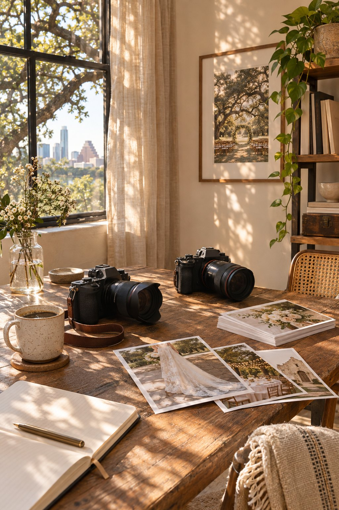

Hello, I’m Alex.
I notice the little things.
The hand on a shoulder. The room before the guests arrive. The way your people look at you.

A calm presence.
A curious eye.
I’m Alex Morgan, the founder and primary booking contact at Golden Hour Photography. Our studio has been photographing weddings for eight years. We are based in Austin and work throughout Austin and the Texas Hill Country.
We photograph one wedding per team per day, with a maximum of two teams working on any date. A standard wedding collection includes eight hours of coverage with a lead photographer and a second photographer.
You can customize your collection with extra coverage, albums, and engagement sessions. RAW files, videography, and print products are not included in our standard wedding coverage.
For the wedding day, we need a family photo list and access to the getting-ready rooms. We’ll work with you and your planner to make room for the photographs without taking over the day.
How the experience unfolds ↗Start with a little
of your story.
Alex Morgan is your primary booking contact.
Booking email: hello@goldenhour.example
Booking phone: (512) 555-0142
The studio
1200 East 6th Street
Austin, TX 78702
Our service territory is Austin and the Texas Hill Country.
Golden Hour is a fictional demonstration business, and this is an illustrative contact card. No message or booking can be submitted.
Browse the collections instead ↗